Jimi Hendrix releases All Along the Watchtower
Reprise Records released the Jimi Hendrix Experience's cover of Bob Dylan's All Along the Watchtower as a single in the United States, backed with Burning of the Midnight Lamp.
It became Hendrix's highest-charting US hit and is widely regarded as one of the greatest cover versions in rock history, so admired that Dylan later performed the song using Hendrix's own arrangement.
Cedric "K-Ci" Hailey is born in Charlotte
Cedric Renard Hailey was born in Charlotte, North Carolina, to gospel-singing parents Cliff and Anita Hailey, per Wikipedia.
He grew up to become the powerhouse lead voice of Jodeci and later half of K-Ci & JoJo, scoring the global number-one hit All My Life.
Merle Haggard releases A Portrait of Merle Haggard
Capitol Records released Merle Haggard and the Strangers' tenth studio album, A Portrait of Merle Haggard, featuring the number-one hits Hungry Eyes and Workin' Man Blues.
The album also introduced Silver Wings, never issued as a single but destined to become one of Haggard's most covered signature ballads.
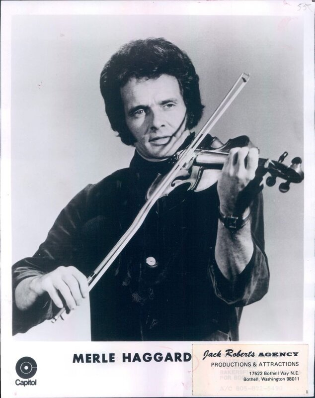
Duke Ellington records La Dolce Vita for Reader's Digest
Duke Ellington and his orchestra cut La Dolce Vita, arranged by Luther Henderson, during an exclusive multi-day recording session commissioned by Reader's Digest in New York.
The sessions reworked contemporary international hits into Ellington's big-band style and stayed unheard by collectors for decades, per this session archive.
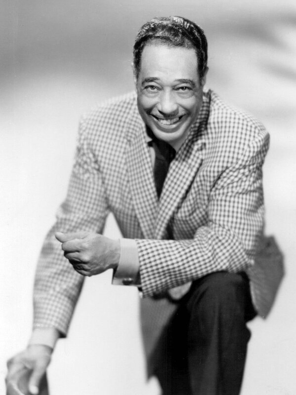
Gary Burton Sextet begins tracking I Never Loved a Woman
The Gary Burton Sextet, featuring session players Richard Tee, Eric Gale, Chuck Rainey, and Bernard Purdie, began a three-day session cutting a jazz-fusion take on Aretha Franklin's I Never Loved a Woman at Atlantic Studios in New York.
The instrumental became a highlight of Burton's 1970 album Good Vibes, blending jazz vibraphone with deep R&B session muscle.
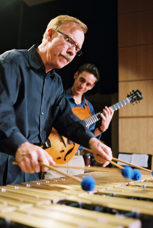
Jimi Hendrix releases All Along the Watchtower
Reprise Records released the Jimi Hendrix Experience's cover of Bob Dylan's All Along the Watchtower as a single in the United States, backed with Burning of the Midnight Lamp.
It became Hendrix's highest-charting US hit and is widely regarded as one of the greatest cover versions in rock history, so admired that Dylan later performed the song using Hendrix's own arrangement.
Grateful Dead close the Sky River Rock Festival
The Grateful Dead capped the final day of the first Sky River Rock Festival and Lighter Than Air Fair on a raspberry farm outside Sultan, Washington.
The three-day gathering is remembered as one of the first major outdoor counterculture rock festivals, drawing more than 20,000 fans to a rural, undeveloped site.
Merle Haggard's Branded Man hits No. 1
Merle Haggard and the Strangers topped the Billboard Hot Country Singles chart with Branded Man, a song drawn directly from Haggard's own years in reformatories and San Quentin prison.
The single spent 15 weeks on the chart, proving raw, autobiographical outlaw country could still win the top spot.
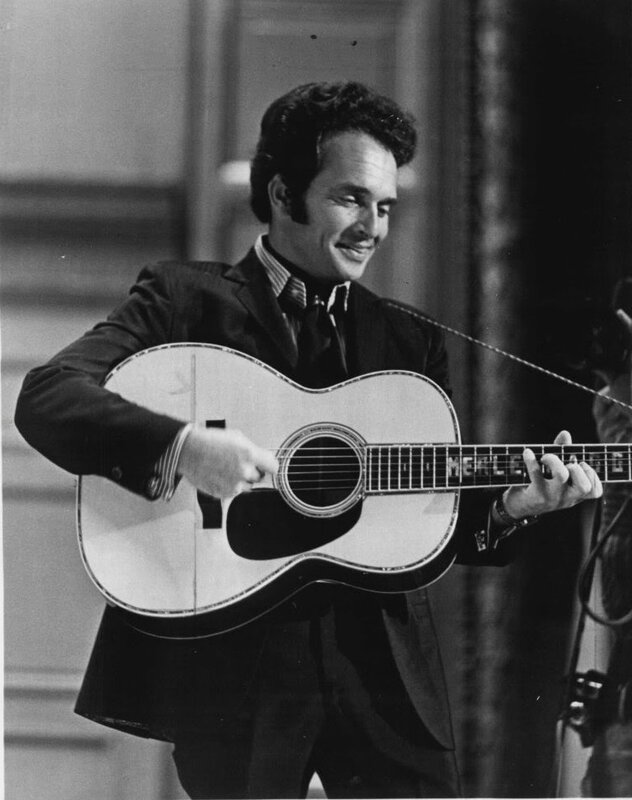
Bobbie Gentry's Ode to Billie Joe holds No. 1
Bobbie Gentry's self-written gothic-folk single Ode to Billie Joe spent its second week atop the Billboard Hot 100, dethroning the Beatles' All You Need Is Love.
The song's ambiguous, haunting narrative went on to earn Gentry three Grammy Awards from eight total nominations.
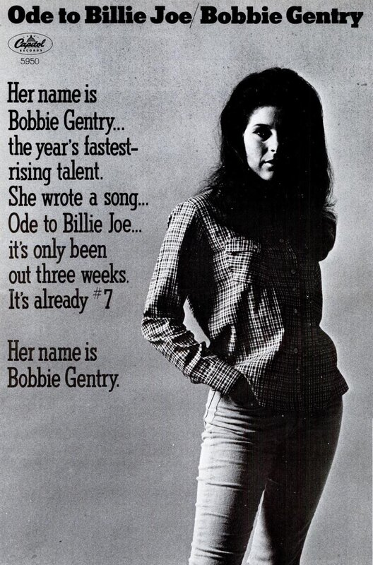
The Rolling Stones release Dandelion in the US
London Records issued the Rolling Stones' psychedelic double-A-side single in the United States, promoting Dandelion as the lead side with We Love You on the flip, a reversal of the UK pressing released weeks earlier.
We Love You featured uncredited backing vocals from John Lennon and Paul McCartney, written as the band's sardonic thank-you to the authorities after that summer's drug busts.
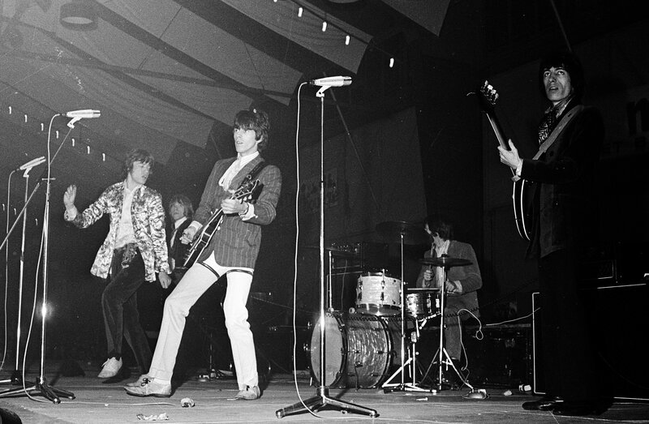
Pink Floyd headline the UFO Club's Roundhouse night
Pink Floyd topped a psychedelic bill with the Move, Soft Machine, and Denny Laine on the second night of a two-day UFO Club event at London's Roundhouse.
The show captured the London underground scene at its creative peak, months before founding member Syd Barrett's departure from the band.
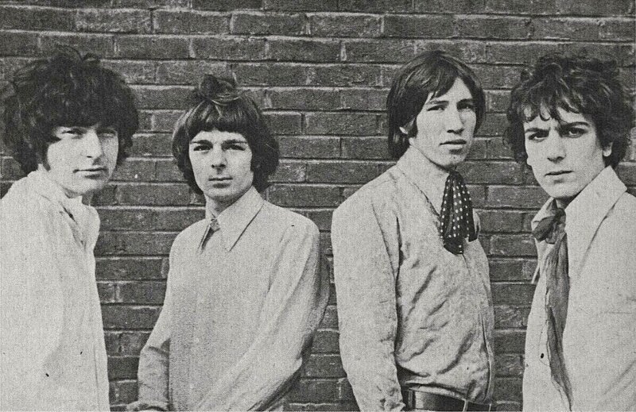
13th Floor Elevators tape their Avalon Ballroom set
Psychedelic rock pioneers the 13th Floor Elevators played a raw, high-energy set at San Francisco's Avalon Ballroom that was professionally recorded for FM broadcast.
The tapes later surfaced as the bootleg staple Live at the Avalon Ballroom, capturing frontman Roky Erickson's band at the vanguard of the emerging psychedelic scene.
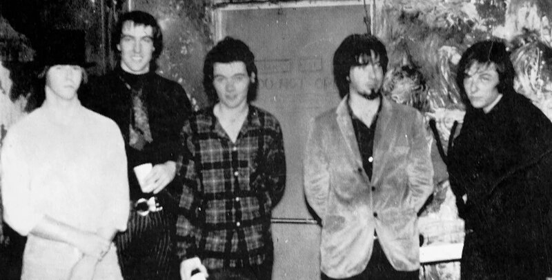
The Doors cut their first demo at World Pacific
Jim Morrison, Ray Manzarek, and John Densmore, still rounded out by Ray's brothers Rick and Jim Manzarek and bassist Patty Sullivan, recorded a six-song demo acetate at World Pacific Studios in Los Angeles.
The session captured a nervous Morrison hearing his own voice on tape for the first time, and five of the six songs, including Moonlight Drive and Hello, I Love You, were later re-recorded for the band's first three albums.
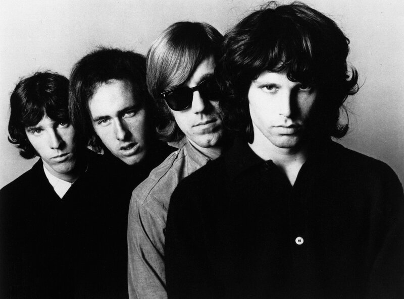
The Beatles play Philadelphia's Convention Hall
The Beatles performed a sold-out, 12-song set at Convention Hall in Philadelphia, a show nearly derailed by race riots in the city days earlier, with Mick Jagger and Keith Richards watching from the crowd, per The Beatles Bible.
The band spent that night socializing with Bob Dylan back at their hotel, one stop on a tour reshaping how young America experienced live music.
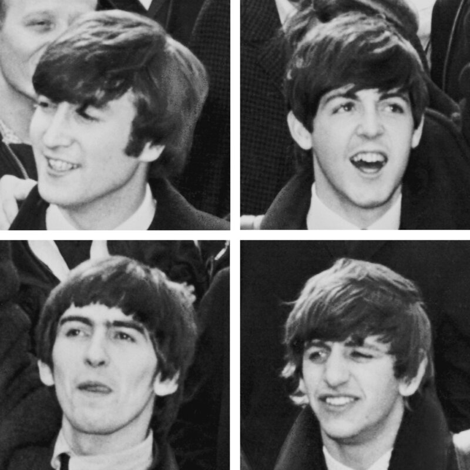
The Rolling Stones record Little Red Rooster
The Rolling Stones cut their slide-guitar-driven cover of Willie Dixon's blues standard Little Red Rooster at Regent Sound Studios in London, alongside the B-side Off the Hook.
Anchored by Brian Jones's weeping slide guitar, the single reached number one in the UK that November, the only pure blues record ever to top the British charts.
The Rolling Stones perform If You Need Me on Top of the Pops
The Rolling Stones played Solomon Burke's If You Need Me live on the BBC's Top of the Pops, hosted that week by David Jacobs and Pete Murray.
It was the band's second appearance on the fledgling chart show, feeding a British TV appetite for rock and roll that was only growing.
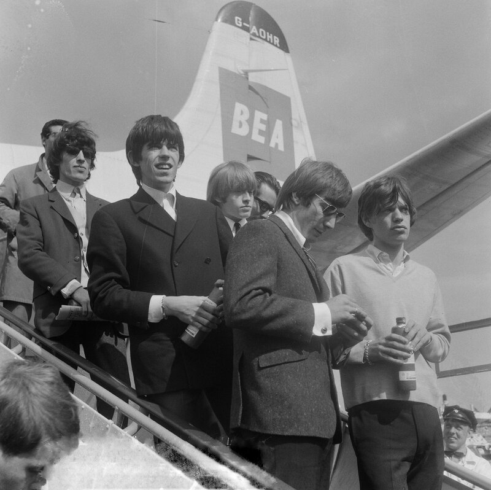
The Stripling Brothers record their oral history
Old-time fiddle duo Charlie and Ira Stripling sat for a 65-minute oral history interview for the Country Music Hall of Fame and Museum, covering their 1920s and '30s recordings for Brunswick and Decca and Charlie's fiddle-contest years.
The session preserved a rare firsthand account of early country string-band music straight from two of its founding performers, both in their final years.
Gary U.S. Bonds' Quarter to Three peaks in the UK
Gary U.S. Bonds' raucous rock and roll single Quarter to Three reached its peak of No. 7 on the UK Singles Chart, months after topping the US Billboard Hot 100.
The song's crossover success cemented Bonds' spot among the Rock and Roll Hall of Fame's 500 Songs That Shaped Rock and Roll.
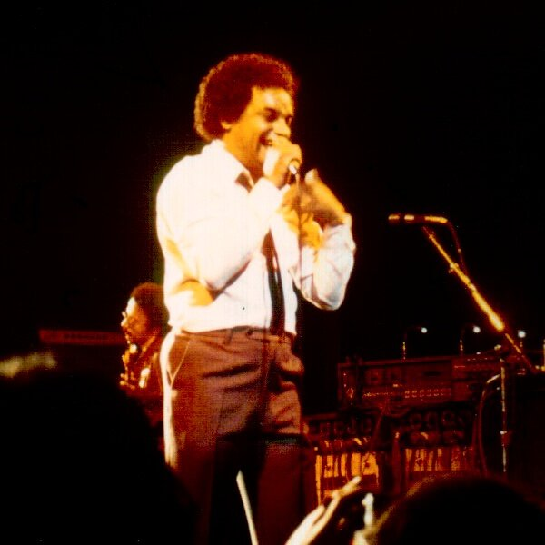
Vancouver radio credits Shake Shake Sherry to the Redwoods
Vancouver's CFUN 1410 switched the artist credit on its chart for Shake Shake Sherry from the Flairs to the Redwoods while the single sat at No. 17, both names pseudonyms for the same singer, per Vancouver Signature Sounds.
Songwriter Jeff Barry had recorded and layered every vocal part himself, releasing the same track under two different group names to different stations.
William Walton's Symphony No. 2 premieres in Edinburgh
Sir William Walton's Symphony No. 2 received its world premiere at the Edinburgh International Festival, performed by the Royal Liverpool Philharmonic Society under conductor John Pritchard.
Liverpool had ceded the honor of the debut to Edinburgh on condition its own orchestra played it, a late-career triumph even though British critics found the work's lighter mood a letdown after Walton's First Symphony.
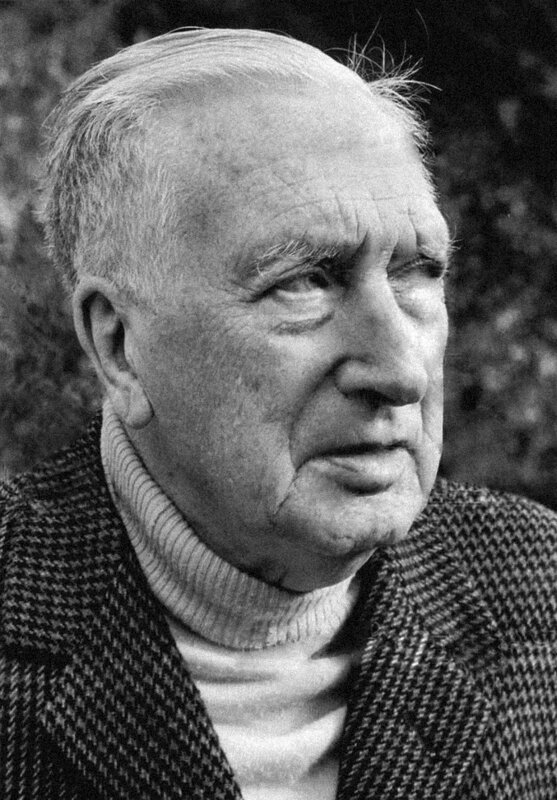
Benny Goodman records live at Ciro's
Benny Goodman and an all-star lineup including vibraphonist Red Norvo, tenor man Flip Phillips, and trumpeter Jack Sheldon were recorded live at Ciro's nightclub in Hollywood.
Columbia later built the LP Benny Goodman Swings Again around the night's tapes, capturing the swing era's biggest star still commanding a room in 1960.
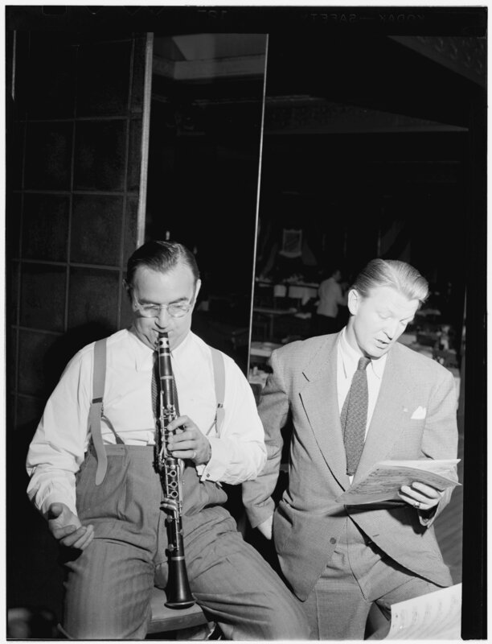
Leonard Bernstein opens a Hollywood Bowl run with the Philharmonic
Leonard Bernstein conducted the New York Philharmonic in the first of three Hollywood Bowl concerts during the orchestra's 1960 West Coast tour.
The Los Angeles stop showcased Bernstein's expressive, crowd-winning podium style to one of America's largest outdoor summer audiences.
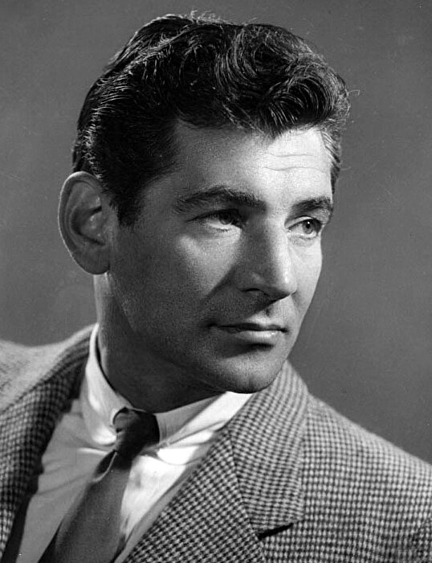
Frequently Asked Questions
What happened in 1960s music on September 2?
September 2 saw 21 verified music events across the decade.
They're headlined by Jimi Hendrix's 1968 release of All Along the Watchtower, plus Beatles and Rolling Stones history, two number-one chart hits, and the birth of Jodeci's K-Ci Hailey.
What is the biggest 1960s music event on September 2?
Jimi Hendrix's 1968 US single release of All Along the Watchtower stands as the day's biggest event.
It's widely regarded as one of the greatest cover versions in rock history.
Did the Rolling Stones do anything on September 2?
Yes, in two different years.
On September 2, 1964, the band recorded Little Red Rooster and performed on Top of the Pops, and on September 2, 1967, London Records released their single Dandelion / We Love You in the US.
What songs hit number one on September 2 in the 1960s?
Merle Haggard's Branded Man topped Billboard's Hot Country Singles chart on September 2, 1967.
The same day, Bobbie Gentry's Ode to Billie Joe held its second week at number one on the Billboard Hot 100.
Which music festival happened on September 2, 1968?
The Grateful Dead closed out the first Sky River Rock Festival and Lighter Than Air Fair.
It took place on a raspberry farm outside Sultan, Washington, on September 2, 1968.
Which 1960s musicians were born on September 2?
Jodeci and K-Ci & JoJo lead vocalist Cedric "K-Ci" Hailey was born September 2, 1969, in Charlotte, North Carolina.